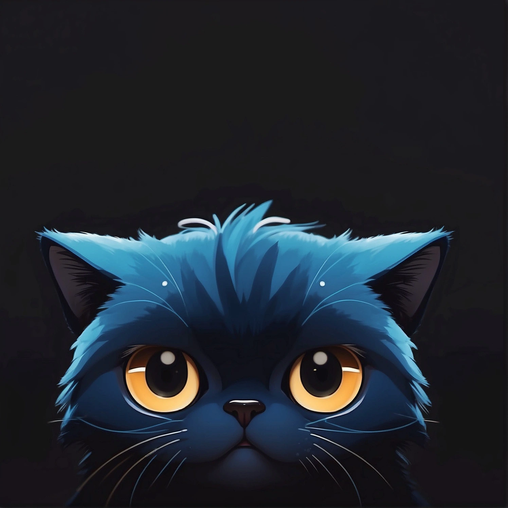

 Фонетика
Гармонии
Гармония ряда (нёбный сингармонизм)
Гласные делятся на:- гласные непереднего ряда: а, о, у, ы
- гласные переднего ряда: ә, ө, ү, э, и
- все гласные в слове бывают только одного ряда
- любые окончания добавляются только с гласными с соответствующим слову типом
Гармония губ (губной сингармонизм)
При наличии в первом слоге кратких огублённых звуков [о], [ө] происходит огубление звуков [ы], [э]:- Если в первом слоге стоит [о], то в следующих слогах [ы] читается как [о]
- Если в первом слоге стоит [ө], то в следующих слогах [э] читается как [ө]
Алфавит
С 522 до 922 года использовалась руническая письменность в Тюркском каганате
С 922 до 1927 года использовалась арабица
Кириллица – с 1939 года по настоящее время в России
В татарском алфавите 39 букв: 9 гласных и 30 согласных.
Отличается от русского алфавита наличием дополнительных 6 букв (ә, ө, ү, җ, ң, һ) и другим или дополнительным произношением 14 русских букв.
Этот цвет обозначает новую букву, а этот цвет обозначает, что есть разница в произношении по сравнению с русским языком.
| Буква | Описание | Пример | Перевод | Транскрипция | |
|---|---|---|---|---|---|
| 1 | А а |
огублённое [а°] в первом слоге (близок к [о]) обычное [а] в остальных слогах |
алма | яблоко | [а°лма] |
| 2 | Ә ә |
как [æ] в английском: cat, black, hat очень мягкий [''a], близок к русскому ['a] в словах «сядь», «глянь», «ряд» |
cәлам | привет | [сәләм] |
| 3 | Б б | как в русском | бал | мёд | [ба°л] |
| 4 | В в |
скрывает в себе два звука: [в] и [w]
[в] только в заимствованных из русского языка словах [w] в татарских словах – произносится как сочетание «у» с гласными |
авыл | деревня | [а°wыл] |
| 5 | Г г |
скрывает в себе два звука: [г] и [гъ] [г] с мягкими гласными в татарских словах и в заимствованных из русского языка словах[гъ] с твёрдыми гласными в татарских словах, звучит как гэканье |
сөлге гаилә |
полотенце семья |
[сөлгө] [гъа°йлә] |
| 6 | Д д | как в русском | дөрес | правильно | [дөрөс] |
| 7 | Е е |
в начале слога произносится как [йы] или [йэ] в середине слога произносится как [э] твёрдость или мягкость зависит от других гласных в слове |
егет каен кием |
парень берёза одежда |
[йэгэт] [къа°йын] [кийэм] |
| 8 | Ё ё | как в русском | |||
| 9 | Ж ж | как в русском | жәлләү | жалеть | |
| 10 | Җ җ | как [ʒ] в английском: pleasure, leisure, vision | җыр | песня | |
| 11 | З з | как в русском | зур | большой | |
| 12 | И и |
в конце слова произносится с оттенком [ий] в остальном как в русском |
икмәк тели |
хлеб желает |
[икмәк] [телий] |
| 13 | Й й | как в русском | |||
| 14 | К к |
скрывает в себе два звука: [к] и [къ] [к] с мягкими гласными в татарских словах и в заимствованных из русского языка словах[къ] с твёрдыми гласными в татарских словах |
кеше кыз |
человек девочка, девушка, дочь |
[кэшэ] [къыс] |
| 15 | Л л | как в русском | ләкин | но | |
| 16 | М м | как в русском | матур | красивый | [ма°тур] |
| 17 | Н н | как в русском | начар | плохо, плохой | [на°щар] |
| 18 | Ң ң |
как [ŋ] в английском: thanks, song, окончания ing в твёрдых словах звук в горлев мягких словах на нёбе |
яңа караңгыбәрәңге |
новый темно, тёмныйкартошка |
[йа°ңа] [къа°раңгъы][бәрәңге] |
| 19 | О о |
пишется только в первом слоге, в последующих слогах пишется «ы», хотя произносится [о] по огублённости между русскими [о] и [у]по краткости как русский [у] в «вуз» |
озын кортбоз |
длинный жуклёд |
[озон] [къорт][бос] |
| 20 | Ө ө |
пишется только в первом слоге, в последующих слогах пишется «е», хотя произносится [ө] как [ɜː] в английском: learn, nurse, turn. но краткий! произнесите ['о] в словах «Мёбиус», «лёд», «клён» как можно короче и с бóльшим огублением |
көзге төн көн |
зеркало ночь день |
[көзгө] [төн] [көн] |
| 21 | П п | как в русском | песи | кошка | [пэси] |
| 22 | Р р | как в русском | рәхмәт | спасибо | |
| 23 | С с | как в русском | су | вода | |
| 24 | Т т | как в русском | төн | ночь | |
| 25 | У у |
как ударный русский [у] в конце слова может выражать согласный [w] |
уку тау |
чтение, учёба гора |
[укъу] [таw] |
| 26 | Ү ү |
как [uː] в английском: blue, two, group близкий к нему звук встречается в словах «жюри», «лютня»произнесите эти слова, придав [’у] ещё бóльшее огубление |
сүз | слово | |
| 27 | Ф ф | как в русском | фил | слон | [филь] |
| 28 | Х х | произносится с более задней артикуляцией и с более сильным придыханием, чем русский [х] | хатын | жена | [ха°тын] |
| 29 | Һ һ |
как [h] в английском: hello, ahead, ham произносится более мягко, чем русский [х] |
һәм | и | |
| 30 | Ц ц | как в русском | |||
| 31 | Ч ч |
[щ] в татарских словах [ч] в заимствованных из русского словах |
чәк-чәк | чак-чак | [щәк-щәк] |
| 32 | Ш ш | как в русском | шәһәр | город | |
| 33 | Щ щ | как в русском | |||
| 34 | Ъ ъ | как в русском только разделительный | кулъяулык | носовой платок | [къул'йа°улыкъ] |
| 35 | Ы ы |
как самый частый звук [ə] в английском: about, butter, bottom более короткий, произношением приближается к русским безударным [а] или [о] |
кызык | интересно | [къызыкъ] |
| 36 | Ь ь |
в конце заимствованного слова определяет мягкость добавляемых окончаний, если он не подчиняется сингармонизму и последняя гласная твёрдая определяет мягкость Е, Ю, Я разделительный |
сәгать яшь көньяк |
час молодой юг |
[сәгъәт] [йәш] [көн'йа°къ] |
| 37 | Э э |
в середине и в конце слов обозначается буквой «е» краткий, близок к русскому мягкому редуцированному [ы]может передавать и согласный гортанный звук ['] гамза |
эремчек эшмаэмай |
творог работапёсик |
[эрэмщэк] [эш][ма°'май] |
| 38 | Ю ю |
обозначает сочетания [йу] или [йү] твёрдость или мягкость зависит от других гласных в слове |
аю юеш |
медведь мокрый |
[а°йу] [йүэш] |
| 39 | Я я |
обозначает сочетания [йа] или [йә] твёрдость или мягкость зависит от других гласных в слове |
ялкын яшен |
пламя гроза |
[йа°лкъын] [йәшэн] |
Латиница – в 2012, 1999 и 1927-1939 годах в Татарстане и по настоящее время зарубежом
Telegram channel «Learn Tatar» on Latin Tatar in English
| Кириллица | Латиница | |
|---|---|---|
| 1 | А а | A a |
| 2 | Ә ә | Ə ə |
| 3 | Б б | B b |
| 4 | В в | W w, V v, |
| 5 | Г г | G g, Ğ ğ |
| 6 | Д д | D d |
| 7 | Е е | E e |
| 8 | Ё ё | |
| 9 | Ж ж | J j |
| 10 | Җ җ | C c |
| 11 | З з | Z z |
| 12 | И и | I i |
| 13 | Й й | Y y |
| 14 | К к | K k, Q q |
| 15 | Л л | L l |
| 16 | М м | M m |
| 17 | Н н | N n |
| 18 | Ң ң | Ñ ñ |
| 19 | О о | O o |
| 20 | Ө ө | Ö ö |
| 21 | П п | P p |
| 22 | Р р | R r |
| 23 | С с | S s |
| 24 | Т т | T t |
| 25 | У у | U u |
| 26 | Ү ү | Ü ü |
| 27 | Ф ф | F f |
| 28 | Х х | X x |
| 29 | Һ һ | H h |
| 30 | Ц ц | |
| 31 | Ч ч | Ç ç |
| 32 | Ш ш | Ş ş |
| 33 | Щ щ | |
| 34 | Ъ ъ | |
| 35 | Ы ы | I ı |
| 36 | Ь ь | |
| 37 | Э э | E e |
| 38 | Ю ю | |
| 39 | Я я |
| Latin | Cyrillic | Value | |
|---|---|---|---|
| 1 | A a | А а | as [ɒ] in «car» in the first syllable, as [ɑ] in the rest syllables |
| 2 | Ə ə | Ә ә | as [æ] in «cat» |
| 3 | B b | Б б | |
| 4 | C c | Җ җ | as [ʑ] in «vision» |
| 5 | Ç ç | Ч ч | [ɕ] |
| 6 | D d | Д д | |
| 7 | E e | Э э, Е е | |
| 8 | F f | Ф ф | |
| 9 | G g | Г г | as [g] in «game» |
| 10 | Ğ ğ | Г г | [ʁ] |
| 11 | H h | Һ һ | |
| 12 | I ı | Ы ы | as [ə] in «bottom» |
| 13 | I i | И и | as [i] in «free» |
| 14 | J j | Ж ж | as [ʐ], used in loanwords |
| 15 | K k | К к | |
| 16 | Q q | К к | as [q] |
| 17 | L l | Л л | |
| 18 | M m | М м | |
| 19 | N n | Н н | |
| 20 | Ñ ñ | Ң ң | as [ŋ] in «song» |
| 21 | O o | О о | as [ʊ] |
| 22 | Ö ö | Ө ө | as [ɵ] in british «nurse» |
| 23 | P p | П п | |
| 24 | R r | Р р | as [ɾ] in scottish english «three» |
| 25 | S s | С с | |
| 26 | Ş ş | Ш ш | as [ʃ] in «sheep» |
| 27 | T t | Т т | |
| 28 | U u | У у | |
| 29 | Ü ü | Ү ү | as [ʉ] in «goose» |
| 30 | V v | В в | |
| 31 | W w | В в, У у | |
| 32 | X x | Х х | as [χ] |
| 33 | Y y | Й й | as [j] in «you» |
| 34 | Z z | З з |